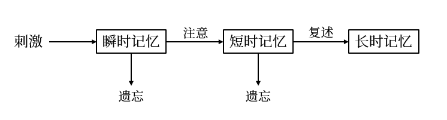

2 心理认知¶
- 感觉是人类知识的唯一来源，感性认知是理性认知的基础
- 感性认识的三种基本形式：感觉、知觉和表象，是心理学的研究对象
- 人类知识是人类心智和认知能力所产生的结果
2.1 感知觉与注意¶
2.1.1 感觉¶
- 感觉：单一器官获得的认知形式，是人脑对直接作用于感官的客观刺激物的个别属性的反映
- 五种基本感觉：视觉、听觉、嗅觉、味觉与触觉
- 阈限：人类感觉器官的灵敏度，超过这个限度，感觉器官就不能感知到存在的物体或现象
- \(\text{Fechner}\) 对数定律：\(P = K\lg I\)，其中 \(I\) 指刺激量，\(P\) 指感觉量
- \(\text{Fechner}\) 认为最小可觉察误差在主观上都相等，因此任何感觉的大小都可由在阈限上增加的最小可觉察误差来决定
- 按照这个公式，感觉量是刺激强度的对数函数
- 感觉适应：刺激物对感觉器的持续作用，从而使得感受性提高或降低的现象，感觉适应是感觉技能熟练或疲劳现象
- 感觉适应的表现和意义：适应现象表现在所有的感觉（除痛觉）中
- 利的方面：减少身心负担，
- 弊的方面：可能使人丧失警觉性
- 感觉适应的一般规律：持续作用的强刺激使感受性降低；持续作用的弱刺激会使感受性增高
- 感觉对比：同一感受器接受不同刺激而使感受性发生变化的现象
- 不同感觉的相互作用：感觉的感受性会由于其他感觉的影响而发生变化的现象
- 不同感觉的相互补偿：某种感觉系统的机能丧失后由其他感觉系统的机能来弥补
- 联觉：当某种感觉受到刺激时出现另一种感官的感觉和表象的现象称为联觉
- 后像：当感受器的刺激作用停止后，暂时留存的关于刺激物的感觉印象
- 正后像：刺激消失后，残留的亮度和颜色与刺激相似的视觉现象，它保持原来刺激物所具有的同一品质的痕迹
- 负后像：刺激消失后，残留的亮度与刺激相反、颜色性质与刺激互补的视觉后像
- 感觉适应的表现和意义：适应现象表现在所有的感觉（除痛觉）中
2.1.2 知觉¶
- 感觉与知觉：人类的认知可以从感觉上升为直觉，但非人类动物的认知不一定
- 感觉时人们从外部世界同时也从身体内部获取信息的第一步，是人类感官对多种不同能量的觉察，并转换成神经冲动
- 知觉是人脑对直接作用于感官的客观事物的整体属性的反映，是人对感觉信息的组织与解释
- 知觉的形成：知觉是在感觉的基础上进一步加工而成，必须满足以下条件
- 知觉通常是多种感觉协同活动的结果
- 知觉需要已有经验的参与
- 知觉是有意注意参与认知活动
- 脑是知觉加工的必要条件，但不是充分条件
- 五种知觉形式：视知觉、听知觉、嗅知觉、味知觉与触知觉
-
知觉的种类
- 物体知觉：以物质或物质现象为知觉对象的知觉
- 空间知觉：对物体空间特性的反映
- 时间知觉：对客观事物发展变化的持续性和顺序性的反映
- 运动知觉：对物体位置移动及其速度的知觉
-
社会知觉：以社会生活过程中的人为知觉对象的知觉
- 他人知觉：感知他人的外部特征，了解他人的内心世界
- 自我知觉：对自己的行为和心理活动的知觉（认知和评价）
- 人际知觉：对人与人之间相互关系、彼此作用的知觉
社会知觉经常发生的四种偏差
- 第一印象：与陌生人初次相见后留下的印象
- 近因效应：依据较近或最近的信息形成的关于他人的印象
- 晕轮效应：对人的某些品质、特征形成的清晰鲜明的印象掩盖了其余品质、特征的知觉
- 刻板印象：对社会上的各类人群所特有的固定看法，或对人概括、泛化的看法
- 物体知觉：以物质或物质现象为知觉对象的知觉
-
知觉的基本特征
- 选择性：当面对众多的客体时，常常优先知觉部分客体
- 对象：被清楚地知觉的客体
- 背景：未被清楚地知觉到的客体
- 整体性：刺激不完整时知觉仍保持完整的认识能力的知觉特性
- 整体性知觉中，物体各部分所起的作用是不同的，关键性的、代表性的、强化部分往往决定对整体的知觉
- 整体性知觉中，刺激物之间的关系起着很重要的作用，刺激物的个别部分改变了，各部分的关系不变，就能保持整体的知觉
- 如果感知的对象是熟悉的东西，那么知觉更多依赖于感觉并根据其接近、相似、闭合、连续等因素感知为整体
- 理解性：根绝已有知识经验对事物进行加工处理，解释并用语词来标识
- 恒常性：客观事物的物理特性在一定范围发生变化，但知觉形象宾补因此发生相应变化的特定
- 选择性：当面对众多的客体时，常常优先知觉部分客体
- 错觉：特殊的知觉形式，是在特定条件下对客观事物必然产生的失真的和歪曲的知觉
- 类型：空间错觉、时间错觉、运动错觉、颜色错觉、形重错觉等
- 错觉的认知意义：错觉是一种与背景认知有关的特殊认知能力，因此错觉在进化中被保留下来
2.1.3 注意¶
- 注意：一种导致局部刺激的意识水平提高的知觉选择性集中
- 注意是伴随心理过程的心理现象，但不属于心理过程
- 注意不等同于意识，但是注意与意识密不可分，当人们处于注意状态时，意识内容比较清晰
- 注意的功能
- 选择功能：对于信息进行选择，是心理活动选择有意义的、符合需要的和与当前活动任务相一致的各种刺激
- 保持功能：外界信息输入后，每种信息单元必须通过注意才能得以保持
- 调节功能：有意注意可以控制活动想着一定目标和方向进行，使注意适当分配和适当转移
- 监督功能：注意在调解过程中需要进行监督，使得注意向规定方向集中
- 注意的分类
- 根据功能分类
- 选择性注意：将注意指向于一项或一些任务而忽视与之相竞争的其他任务
- 集中性注意：人类的意识不仅指向于一定的刺激，而且还集中于一定的刺激
- 分配性注意：主体能够对不同任务给予关注或能操作几项任务
- 根据有无目的及抑制程度分类
- 无意注意：事先没有预定的目的，也不需要做意志努力的注意
- 有意注意：有预定目的，需要做一定努力的注意
- 有意后注意：有自觉的目的，但不需要意志努力的注意
- 根据功能分类
- 注意的特征
- 稳定性：同一对象环境或同一活动上的注意持续时间
- 狭义的注意稳定性：注意保持在同一对象上的时间
- 广义的注意稳定想：注意保持在同一活动上的时间
- 广度：同一时间内能清楚地把握对象的数量，影响注意广度的因素是主角对象的特点与个人知觉活动的任务和知识经验
- 注意的分配：同一时间内把注意指向于不同的对象
- 注意的转移：注意的中心根据新的任务，主动从一个对象或活动转移到另一个对象或活动上去
- 稳定性：同一对象环境或同一活动上的注意持续时间
- 注意障碍：注意过程中发生的心理障碍，意识发生障碍使总是伴随有注意障碍。临床上有两种常见的注意障碍
- 注意减弱：患者主动与被动注意的兴奋性减弱，以至注意容易疲劳，注意力不容易集中，从而记忆力也受到不好的影响
- 注意狭窄：患者的注意范围显著缩小，主动注意减弱；当注意集中于某一事物时，不能再注意与之有关的其他事物
2.2 表象与记忆¶
2.2.1 表象¶
- 表象：在感知觉基础上，经大脑的进一步加工而形成的经验的认识形式
- 表象是感性认知的最高形式，可以通过语言被加工为概念
- 感知觉不可以脱离感官而存在，表象却可以脱离感官而存在
- 心理学中，表象是过去感知过的事物形象在头脑中再现的过程，即客观对象不在主体面前呈现时，在观念中所保持的客观对象的形象和客体形象在观念中复现的过程
- 表象的特征
- 直观性：表象是直观的感性反映，与知觉相比，表象具有下列特点
- 表象不如知觉完整、不能反映客体的详尽特征
- 表象不如知觉稳定，是变换的、流动的
- 表象不如知觉鲜明，是比较模糊的、暗淡的，他反应的仅是客体的大体轮廓和一些主要特征
- 概括性：表象是多次知觉概括的结果，它有感知的原型，却不限于某个原型。表象的概括性有一定限度，对于复杂的事物和关系，表象是难以完全表现的
- 在多种感觉道上发生：表象可以是各种感觉的映象
- 直观性：表象是直观的感性反映，与知觉相比，表象具有下列特点
- 表象在思维中的作用
- 表象思维（形象思维）就是对心理表象进行操作，并形成表象思维的认知过程
- 表象与词在心理操作中双重编码，在更多情况下，信息在脑中可以进行编码，也可以进行图像编码
- 表象是概念思维操作的支柱，概念思维操作所需表象的参与与支持
- 影响表象的因素
- 物自体：物自体的信息是表象产生的根本原因，不同的物自体就会发出不同的信息，从而产生不同的表象，通过其区分外物
- 信息的传播媒介
- 人的感官
- 主体所在的位置：表象与物自体实际上是一种对应关系，会因主体与物自体的距离和方位的关系的不同带来表象的变化
- 经验与环境：表象的形成过程也受到人已有经验的影响
-
表象的作用
- 表象是由感性认识向理性认识过渡的桥梁
- 表象认识是学习重要内容：感性认知的主要形式是表象；理性认识的主要形式是概念、判断与推理
- 记忆表象是想象的基础：想象是人脑对已有的表象进行加工改造而创造新形象的过程，没有表象就无法进行想象活动
\(\text{Stroop}\) 效应
当两种通道的知觉不一致时，联觉表象认知往往会引发 \(\text{Stroop}\) 效应（用不同的颜色写关于颜色的字，说出字的颜色会受到字义的干扰）
- \(\text{Mecleod}\) 认为人类对刺激的不同维度的加工是平行的，而加工速度不同
- 自动加工理论认为在 \(\text{Stroop}\) 任务中，读词是自动加工，颜色命名是控制加工
2.2.2 记忆¶
- 记忆：头脑中积累和保存个体经验的心理过程
- 记忆是一个人对过去活动、感受、经验的印象累积是表象的认知形式的脑机制与功能
- 记忆形成的步骤中，可分为下列三种加工方式
- 译码：获得信息并进行解释、加工与组合
- 储存：将组合整理过的信息用一定的形式保留在人的头脑中
- 提取：以再认和回忆的形式将储存的信息取出来
-
记忆的分类
- 按内容分类
- 形象记忆：对感知过的事物形象的记忆
- 情景记忆：对亲身尽力过的，有时间、地点、人物与情节的事件的记忆
- 情绪记忆：对自己体验过的情绪和情感的记忆
- 语义记忆：用词语概括的各种有组织的知识的记忆
- 动作记忆：对身体的运动状态和动作机能的记忆
-
按保持时间分类
- 瞬时记忆：又称感觉等级，是指外界刺激以极短的事件一次呈现后，信息在感觉通道内迅速被等级并保留一瞬间的记忆
- 瞬时记忆的编码当时是外界刺激物的形象
- 瞬时记忆的容量大（一般认为内容为 \(9-20\) 比特），但保留的时间很短
- 如果对瞬时记忆的信息加以注意，或当意识到瞬时记忆的信息时，信息就被转入短时记忆
- 短时记忆：外界刺激以极短的时间一次呈现后保持时间在一分钟或几分钟内的记忆
- 短时记忆的容量有限，一般为 \(7 \pm 2\)，如果超过容量或插入其他活动，短时记忆容易受到干扰而发生遗忘
- 语言文字的材料在短时记忆中多为听觉编码，既容易记住的是语言文字的声音而非其形象；非语言文字的材料主要是形象记忆且视觉记忆的形象占有更重要地位
- 短时记忆的信息是当前正在加工的信息，因而是可以被意识到的
- 短时记忆的信息经过复述，无论是机械复述还是运用记忆术所做的精细复述
- 长时记忆：永久性的信息存贮，一般能保持多年甚至终身
- 长时记忆的容量无论是信息的种类还是数量都是无限的
- 长时记忆的编码有语义编码和形象编码两种。语义编码是用语言对信息进行加工，按材料的意义加以组织的编码；形象编码是以感觉映象的形式对事物的意义进行编码
- 长时记忆中存储的信息如果不是有意回忆则不会被意识到
- 长时记忆的以往或因自然的衰退，或因干扰（前摄抑制或倒摄抑制）造成
三级记忆模型
\(\text{Atkinson}\) 与 \(\text{Shiffrin}\) 提出的三种记忆的关系如下：

- 瞬时记忆：又称感觉等级，是指外界刺激以极短的事件一次呈现后，信息在感觉通道内迅速被等级并保留一瞬间的记忆
- 按内容分类
-
记忆的脑机制：海马区是长时记忆的暂时场所，信息最终存在于大脑皮层的相关部位，表达记忆信息需从前额叶皮层表达
- 海马区：帮助人类处理长期学习与记忆声光、味觉等事件的大脑区域，发挥叙述性记忆
- 前额叶在情景记忆、工作记忆、空间记忆、时间记忆及记忆的编码、存储和提取过程中都起重要作用
- 记忆的作用
- 记忆作为一种基本的心理过程，和其他的心理活动密切联系
- 记忆在个体心理发展中有重要作用
- 记忆联结着人的心理活动，是学习、工作和生活的基本机能
- 记忆表象：保存在人和动物头脑中的曾感知过的客观事物的形象，感知过的事物不在眼前而在头脑中重现出来的形象称为记忆表象
- 形象性：记忆表象产生于感知，是在过去感知的基础上形成的并保持在头脑中的事物映象
- 概括性：记忆表象来自对事物的知觉，它常常是综合多次知觉的结果，
- 可操作性：表象在头脑中不是凝固不动的，是可以被心智操作的